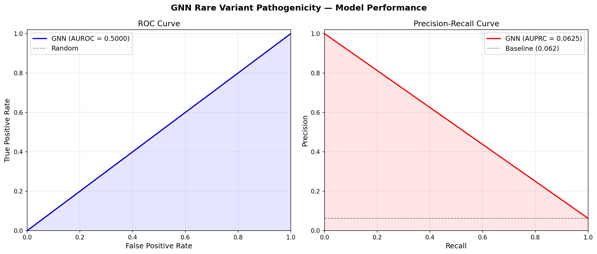
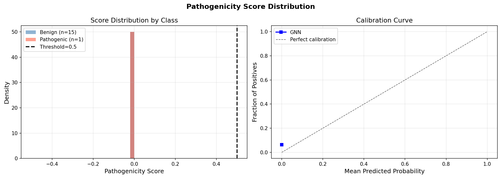
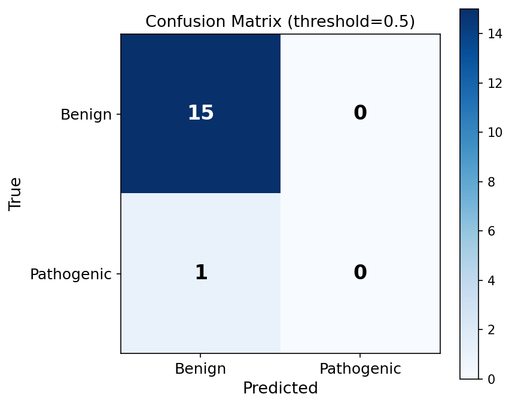

Generated from test set evaluation of the Graph Attention Network model.
| Metric | Value |
|---|---|
| split | test |
| n_total | 16 |
| n_positive | 1 |
| n_negative | 15 |
| prevalence | 0.0625 |
| auroc | 0.5 |
| auprc | 0.0625 |
| brier_score | 0.062499987500010006 |
| optimal_threshold | 0.01 |
| f1_at_05 | 0.0 |
| f1_optimal | 0.0 |
| sensitivity | 0.0 |
| specificity | 0.9999999999333333 |
| ppv | 0.0 |
| npv | 0.9374999999414062 |
| tp | 0 |
| fp | 0 |
| tn | 15 |
| fn | 1 |



Generated by Rare Variant GNN Pipeline